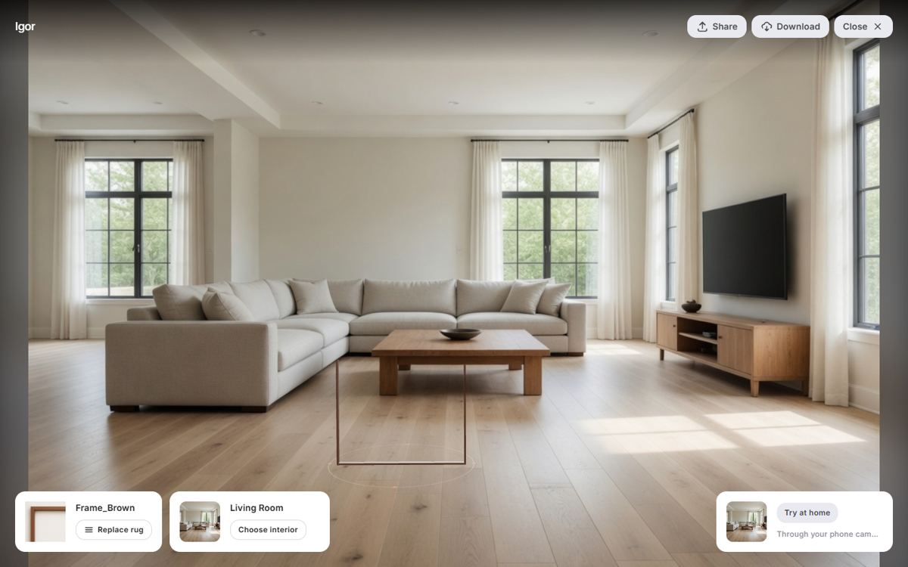
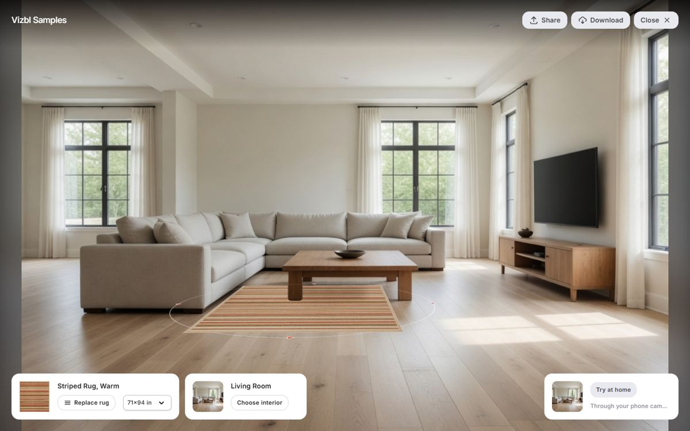

Отладка
Сбои виджетов VIZBL. У каждого случая есть кнопки, чтобы воспроизвести ошибку прямо здесь.
Ковёр и пол после картины: вместо товара виджет показывает раму
ОткрытЧто происходит
На одной странице открываем картину, выбираем интерьер, закрываем виджет. Потом открываем ковёр или пол — и виджет показывает не тот товар. На полу стоит рама Frame_Brown, у товара подпись «Replace rug» (или «Replace flooring»), в шапке профиль «Igor». Виджет загружает ковёр, но следом снова запрашивает раму, которую грузил для картины, и показывает её.
На свежей странице ковёр открывается правильно: шапка с названием аккаунта ковра, ковёр в комнате, переключатель размера. Ковёр, а за ним пол — тоже правильно. Ломает только картина, открытая раньше.


Где воспроизводится
- Скрипт:
cdn.neurodyn.ai/@neurodyn/room-viewer/dist/room-viewer.embed.min.js - Компьютер, Edge (Chromium), 2D-режим с готовым интерьером
- Картина в режиме
poster, как в живом демо на vizbl.com/wallart - Кнопки без
-api-key, как на vizbl.com: виджет берёт объекты через/catalog/object. Воспроизводится на vizbl.com (локальная вёрстка /shopify-ar) и здесь - С ключами не воспроизводится: рамы картины по
/public/objects/by-tinuuidотвечают 404, поэтому протекать нечему. Возможно, это отдельная проблема: в режиме с ключом картина остаётся без рам
Шаги
- В блоке «без ключа» нажать «1. Картина», выбрать любой интерьер, закрыть виджет.
- Нажать «2. Ковёр» (или «3. Пол») и выбрать интерьер: вместо товара рама, в шапке «Igor».
- Для сравнения: обновить страницу и сразу нажать «2. Ковёр» — всё правильно.
Воспроизвести: кнопки как на vizbl.com, без ключа
Для сравнения: те же шаги с ключами этого сайта — не воспроизводится
Что видно в сети
| Действие | Запросы api.neurodyn.ai/catalog/object |
|---|---|
| Открыть картину | пять рам: Frame_Brown (RcSd3KphTyq_JQEjNCqKQA), Frame_White, Frame_Black, Frame_Gold, Frame_Metal |
| Потом открыть ковёр | сначала сам ковёр, следом снова Frame_Brown (RcSd3KphTyq_JQEjNCqKQA). В сцене и в карточке товара — рама |
| Ковёр на свежей странице | только ковёр, рам нет |
Где мешает
Демо-магазин на промо /shopify-ar: пять товаров на одной странице, у картины, ковра и пола свои кнопки room-viewer. У магазинов — везде, где картину и ковёр открывают на одной странице без перезагрузки: быстрый просмотр в каталоге, темы с подгрузкой страниц. С одним приложением VIZBL для Shopify на все решения таких магазинов станет больше.
Код кнопок на vizbl.com (без ключа)
<button type="button" data-neurodyn-room-viewer-dialog data-neurodyn-room-viewer-type="poster" data-neurodyn-room-viewer-name="Deco Sunset" data-neurodyn-room-viewer-src="https://vizbl.com/…/deco-sunset.jpg" data-neurodyn-room-viewer-width="0.610" data-neurodyn-room-viewer-height="0.914" data-neurodyn-room-viewer-dimension-unit="m" data-neurodyn-room-viewer-language="en">See it on your wall</button> <button type="button" data-neurodyn-room-viewer-dialog data-neurodyn-room-viewer-type="rugs" data-neurodyn-room-viewer-tinuuid="yk0nXGFTTueFOgnBrcSpeA" data-neurodyn-room-viewer-name="Striped Rug" data-neurodyn-room-viewer-display-unit="in" data-neurodyn-room-viewer-language="en">Try in your room</button>